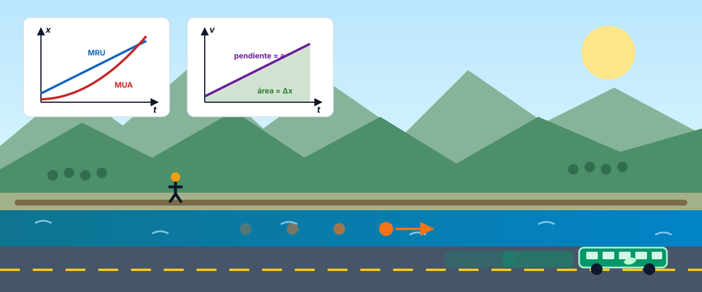

Física para la gestión ambiental — Pereira (Risaralda)
MOVIMIENTO UNIFORME Y UNIFORMEMENTE ACELERADO
Laboratorio virtual con cinco simuladores y planos cartesianos interactivos para leer el movimiento en sus gráficas \(x\)–\(t\), \(v\)–\(t\) y \(a\)–\(t\), con base en Serway y Jewett, capítulo 2.

CompetenciaModela matemáticamente movimientos rectilíneos de situaciones ambientales y cotidianas e interpreta sus representaciones gráficas.
Resultado de aprendizajeCalcula e interpreta posición, velocidad y aceleración en MRU y MUA a partir de ecuaciones, tablas y gráficas.
Duración2 sesiones de 2 h y trabajo autónomo.
FuenteSerway & Jewett, Física para ciencias e ingeniería, cap. 2.
TU MISIÓN EN LA CUENCA DEL OTÚN
Formas parte de un equipo de gestión ambiental. Medirás la velocidad del agua con el método del flotador, describirás el recorrido de un guardabosques, analizarás cómo arranca y frena un bus eléctrico, leerás la gráfica de la ruta de un camión recolector y calcularás cuánta distancia necesita un conductor para no atropellar fauna silvestre. ¡La física del movimiento también es una herramienta ambiental!
Al terminar esta guía podrás…
Diferenciar posición, desplazamiento, distancia, velocidad, rapidez y aceleración, con sus unidades SI.
Aplicar las ecuaciones del MRU y del MUA a problemas ambientales y de movilidad.
Interpretar pendientes y áreas en las gráficas \(x\)–\(t\), \(v\)–\(t\) y \(a\)–\(t\) y construir unas a partir de otras.
Datos de identificación del estudiante
Definición fundamental
Referencia, posición y desplazamiento
La cinemática describe el movimiento sin ocuparse de sus causas. Para describirlo eliges un sistema de referencia: un origen O, un eje con sentido positivo y un reloj. La posición \(x\) es la coordenada del móvil sobre ese eje, con signo. El desplazamiento es el cambio de posición:
$$\Delta x = x_f - x_i$$
Solo depende de los puntos inicial y final y su signo indica el sentido. La distancia recorrida \(d\) es la longitud total del camino: es un escalar no negativo y siempre \(d \ge |\Delta x|\).
Rapidez y velocidad
Velocidad media y rapidez media
La velocidad media divide el desplazamiento entre el intervalo de tiempo; la rapidez media usa la distancia recorrida:
$$\bar v = \frac{\Delta x}{\Delta t} \qquad \bar r = \frac{d}{\Delta t}$$
Unidad SI: m/s (\(1\text{ m/s} = 3.6\text{ km/h}\)). La velocidad instantánea \(v = dx/dt\) es la pendiente de la gráfica \(x\)–\(t\) en un instante. La aceleración mide cuánto cambia la velocidad por unidad de tiempo: \(\bar a = \Delta v/\Delta t\), en m/s².
Ejemplo resuelto: recorrido por un sendero ecológico
1Un guardabosques sale de \(x_A = 50\text{ m}\), camina a \(1.0\text{ m/s}\) hasta \(x_B = 350\text{ m}\), observa aves \(60\text{ s}\) y regresa hasta \(x_C = 200\text{ m}\).
3\(\bar v = 150/510 \approx 0.29\text{ m/s}\) y \(\bar r = 450/510 \approx 0.88\text{ m/s}\).
El mismo recorrido tiene dos «rapideces» muy distintas: la velocidad media ignora las idas y vueltas. Compruébalo en la Simulación 1.
Figura 1.1 — Distancia y desplazamiento: el caminante recorre \(d = 450\text{ m}\) (ida y regreso), pero su desplazamiento solo es \(\Delta x = x_C - x_A = +150\text{ m}\). Por eso \(d \ge |\Delta x|\) y la rapidez media supera a la velocidad media. Fuente: elaboración propia.
Simulación 1: Sendero ecológico y gráfica \(x\)–\(t\)
Arrastra las banderas A, B y C
Rapidez al caminar
Pausa en B (aves)
Punto B (xB)
Punto C (xC)
Experimenta:
Predice: si C coincide con A (ida y regreso completos), ¿cuánto valen \(\Delta x\) y \(\bar v\)? ¿Y la rapidez media? Verifícalo.
Mide: ¿qué forma tiene la gráfica \(x\)–\(t\) durante la observación de aves? Haz clic sobre ella y explica qué significa su pendiente.
Modelo de análisis
¿Cuándo un movimiento es uniforme?
Un cuerpo describe un MRU cuando se mueve en línea recta con velocidad constante: recorre desplazamientos iguales en tiempos iguales, su aceleración es nula y la velocidad media coincide con la instantánea. Si en \(t = 0\) está en \(x_0\):
$$x(t) = x_0 + v\,t$$
Es un modelo: un flotador en un tramo recto y homogéneo de un río o un vehículo con control de crucero se aproximan a él.
Interpretación gráfica
Las tres gráficas del MRU
\(x\)–\(t\): recta cuya pendiente es la velocidad, \(v = \Delta x/\Delta t\). Pendiente positiva, nula o negativa: avanza en sentido +, reposa o avanza en sentido −.
\(v\)–\(t\): recta horizontal; el área bajo ella es el desplazamiento.
\(a\)–\(t\): coincide con el eje \(t\), porque \(a = 0\).
$$\Delta x = v\,\Delta t$$
Ejemplo resuelto: método del flotador en el río Otún
1Entre dos estaciones separadas \(L = 20\text{ m}\), un flotador tarda \(\Delta t = 25\text{ s}\): \(v_{sup} = L/\Delta t = 0.80\text{ m/s}\).
2Con \(x_0 = 0\): \(x(t) = 0.80\,t\); a los \(40\text{ s}\) el flotador está en \(x = 32\text{ m}\).
3El agua del fondo es más lenta, así que se estima \(\bar v \approx 0.85\,v_{sup}\). Si la sección mide \(A = 3.0\text{ m}^2\): \(Q = \bar v A \approx 0.85(0.80)(3.0) = 2.04\text{ m}^3/\text{s}\).
El caudal \(Q\) es un dato básico para gestionar concesiones de agua y vigilar sequías: con un cronómetro y el modelo MRU obtienes una primera estimación en campo.
Figura 2.1 — Gráficas del MRU: en \(x\)–\(t\) la pendiente \(\Delta x/\Delta t\) es la velocidad (positiva, nula o negativa); en \(v\)–\(t\) la recta es horizontal y el área del rectángulo entre \(t_1\) y \(t_2\) es el desplazamiento \(\Delta x = v\,\Delta t\). Fuente: elaboración propia.
Simulación 2: Flotador en el río (MRU)
Arrastra el flotador para elegir \(x_0\)
Posición inicial (x₀)
Rapidez de la corriente
Experimenta:
Predice: si orientas el eje \(x\) río arriba, ¿cambia el movimiento del flotador? ¿Qué les pasa al signo de \(v\) y a la pendiente de \(x\)–\(t\)?
Mide: con \(v = 0.80\text{ m/s}\), lee el \(\Delta t\) entre A y B y comprueba \(v = L/\Delta t\). Luego compara el área bajo \(v\)–\(t\) a los \(20\text{ s}\) con el \(\Delta x\) de la gráfica \(x\)–\(t\).
Definición fundamental
Aceleración constante
Un movimiento rectilíneo es uniformemente acelerado cuando su aceleración \(a = \Delta v/\Delta t\) es constante: la velocidad cambia en cantidades iguales en tiempos iguales. Si \(v\) y \(a\) tienen el mismo signo, el móvil acelera; si tienen signos opuestos, frena. Con \(t_0 = 0\):
Al eliminar \(t\) entre las dos ecuaciones se obtiene una relación útil cuando no conoces el tiempo:
$$v^2 = v_0^2 + 2a\,\Delta x$$
Gráficas: \(x\)–\(t\) es una parábola cuya tangente tiene pendiente \(v\); \(v\)–\(t\) es una recta de pendiente \(a\) y su área es \(\Delta x\); \(a\)–\(t\) es horizontal y su área es \(\Delta v\). La caída libre sin aire es un MUA con \(a = -g = -9.8\text{ m/s}^2\) (eje hacia arriba).
Figura 3.1 — Fotografía estroboscópica: en el MRU las posiciones quedan igualmente espaciadas; en el MUA desde el reposo, como \(x = \tfrac12 a t^2\), los tramos recorridos en intervalos iguales crecen como 1 : 3 : 5 : 7…, regularidad que Galileo Galilei (1564–1642) estudió con planos inclinados y publicó en 1638. Fuente: elaboración propia.
Simulación 3: Bus eléctrico con aceleración constante
Una imagen por segundo (estroboscopia)
Velocidad inicial (v₀)
Aceleración (a)
Experimenta:
Predice: con \(v_0 = 0\), ¿qué tramos recorre el bus en los segundos 1, 2 y 3? ¿Se cumple la razón 1 : 3 : 5? Compruébalo con la estroboscopia y la gráfica \(x\)–\(t\).
Mide: pausa en \(t = 5\text{ s}\) y compara la pendiente de la tangente en \(x\)–\(t\) con el valor de \(v\) en \(v\)–\(t\). Con \(v_0 = 12\text{ m/s}\) y \(a = -2\text{ m/s}^2\), ¿cuándo y dónde se detiene?
Pendiente
La pendiente es una tasa de cambio
La pendiente de una gráfica mide cuánto cambia la variable vertical por cada segundo. La pendiente de la tangente a \(x\)–\(t\) es la velocidad; la pendiente de \(v\)–\(t\) es la aceleración:
$$v = \frac{dx}{dt} \qquad a = \frac{dv}{dt}$$
Si la gráfica \(x\)–\(t\) se curva hacia arriba, \(a > 0\); si se curva hacia abajo, \(a < 0\). Un tramo horizontal en \(x\)–\(t\) significa reposo.
Área
El área acumula el cambio
El área bajo \(v\)–\(t\) entre \(t_1\) y \(t_2\) es el desplazamiento; el área bajo \(a\)–\(t\) es el cambio de velocidad:
$$\Delta x = \int_{t_1}^{t_2} v\,dt \qquad \Delta v = \int_{t_1}^{t_2} a\,dt$$
El área por debajo del eje \(t\) cuenta como negativa (el móvil retrocede). La distancia recorrida suma todas las áreas en valor absoluto, por eso puede superar a \(|\Delta x|\).
Tabla 4.1 — Forma de las gráficas según el tipo de movimiento
Movimiento
\(x\)–\(t\)
\(v\)–\(t\)
\(a\)–\(t\)
Reposo
Recta horizontal
Sobre el eje (\(v = 0\))
Sobre el eje (\(a = 0\))
MRU
Recta inclinada (pendiente \(v\))
Recta horizontal (área \(\Delta x\))
Sobre el eje (\(a = 0\))
MUA acelerando
Parábola que se empina
Recta de pendiente \(a\)
Recta horizontal (área \(\Delta v\))
MUA frenando
Parábola que se aplana
Recta hacia \(v = 0\)
Horizontal, signo opuesto a \(v\)
Simulación 4: Ruta de un camión recolector
Arrastra los vértices de la gráfica \(v\)–\(t\)
Escenario de la ruta
Experimenta:
Predice: en el escenario 1, ¿en qué tramos la gráfica \(x\)–\(t\) será una recta y en cuáles una parábola? Recorre la ruta y verifica.
Mide: calcula a mano el área bajo \(v\)–\(t\) en cada tramo del escenario 1 y compárala con el \(\Delta x\) total. En el escenario 2, ¿por qué la distancia supera a \(|\Delta x|\)?
Contexto ambiental
Fauna en la vía: MRU + MUA
El atropellamiento es una causa importante de muerte de fauna silvestre en vías que bordean bosques, como las que conducen a las áreas protegidas de Risaralda. Cuando un conductor ve un animal, primero avanza en MRU durante el tiempo de percepción–reacción \(t_r\) (del orden de 1 a 2 s) y después frena en MUA con desaceleración de magnitud \(a\):
$$d_{det} = v_0\,t_r + \frac{v_0^2}{2a}$$
Escalamiento
¿Por qué importa tanto la rapidez?
La distancia de reacción \(d_r = v_0 t_r\) crece en proporción a \(v_0\), pero la de frenado \(d_f = v_0^2/(2a)\) crece con su cuadrado: al duplicar la rapidez, \(d_f\) se cuadruplica. A \(60\text{ km/h}\) (\(16.7\text{ m/s}\)), con \(t_r = 1.5\text{ s}\) y \(a = 7\text{ m/s}^2\) (asfalto seco):
$$d_{det} = 25.0 + 19.8 = 44.8\text{ m}$$
En pavimento mojado \(a\) baja a unos \(4.5\text{ m/s}^2\) (valores típicos aproximados) y la distancia aumenta.
Figura 5.1 — La distancia de detención es un área: el rectángulo bajo \(v\)–\(t\) es la distancia de reacción \(v_0 t_r\) y el triángulo es la de frenado \(\tfrac12 v_0 (v_0/a) = v_0^2/(2a)\); su suma da \(d_{det}\). Fuente: elaboración propia.
Simulación 5: ¿Alcanza a detenerse?
Arrastra el animal para cambiar D
Rapidez inicial (v₀)
Tiempo de reacción (tr)
Distancia al animal (D)
Estado de la vía
Experimenta:
Predice: con \(D = 50\text{ m}\), asfalto seco y \(t_r = 1.5\text{ s}\), ¿cuál es la rapidez máxima (en km/h) para no atropellar al animal? Pruébala en el simulador.
Mide: haz clic en las gráficas para leer las áreas amarilla y roja de \(v\)–\(t\) y compáralas con \(d_r\) y \(d_f\). ¿Qué tramo de \(x\)–\(t\) es recto y cuál es parabólico?
Resuelve, verifica y transcribe
Resuelve primero en tu cuaderno, verifica aquí tu resultado y despliega el procedimiento para comparar. Usa \(g = 9.8\text{ m/s}^2\) cuando se necesite.
Rúbrica de desempeño
Criterio
Superior (4.6–5.0)
Alto (4.0–4.5)
Básico (3.0–3.9)
Bajo (1.0–2.9)
Conceptos básicos
Distingue \(\Delta x\) de \(d\) y \(\bar v\) de la rapidez media, con signos y unidades correctos.
Calcula \(\Delta x\) y \(\bar v\) con errores menores de signo.
Calcula la distancia pero la usa como desplazamiento.
Confunde posición, desplazamiento y distancia.
MRU
Aplica \(x = x_0 + vt\), interpreta pendiente y área y resuelve el método del flotador.
Aplica la ecuación pero duda al interpretar el signo de \(v\).
Usa \(d = vt\) sin posición inicial ni sistema de referencia.
Asocia la pendiente de \(x\)–\(t\) con la trayectoria.
MUA
Elige la ecuación adecuada, incluida \(v^2 = v_0^2 + 2a\Delta x\), y combina MRU y MUA en la detención.
Resuelve problemas de un solo tramo con \(a\) constante.
Sustituye datos pero omite el término \(\tfrac12 at^2\).
Trata el MUA como si fuera MRU.
Interpretación gráfica
Construye \(x\)–\(t\) y \(a\)–\(t\) a partir de \(v\)–\(t\) usando áreas y pendientes, con áreas negativas.
Lee pendientes y áreas en tramos simples.
Lee valores puntuales pero no pendientes ni áreas.
Interpreta la gráfica como un dibujo del camino.
Cuaderno o informe
Transcripción pulcra, gráficas con ejes rotulados y unidades en cada paso.
Transcripción ordenada y legible.
Transcripción incompleta.
Sin evidencias escritas.
REFLEXIÓN METACOGNITIVA
¿Cómo puede un cuerpo tener velocidad cero y, en ese mismo instante, aceleración distinta de cero? Da un ejemplo con una gráfica \(v\)–\(t\).
Si en una vía la rapidez permitida se duplica, ¿cuántas veces aumenta la distancia de frenado? ¿Qué implica para el diseño de pasos de fauna?
¿Cómo usarías el método del flotador y una gráfica \(x\)–\(t\) para comparar el río Otún o el río Consota en época seca y en época de lluvias?
* Responde de puño y letra en tu cuaderno o en tu informe.
Calificación y entrega
Genera tu reporte de resultados, cópialo para enviarlo al docente y guarda la guía en PDF tamaño carta para tu portafolio.
Referencias
Serway, R. A., & Jewett, J. W. (2008). Física para ciencias e ingeniería (7.ª ed., Vol. 1, cap. 2). Cengage Learning.
Young, H. D., & Freedman, R. A. (2009). Física universitaria (12.ª ed., Vol. 1, cap. 2). Pearson Educación.
Hewitt, P. G. (2007). Física conceptual (10.ª ed., caps. 2–3). Pearson Educación.
World Meteorological Organization. (2010). Manual on stream gauging: Vol. I. Fieldwork (WMO-No. 1044). WMO.